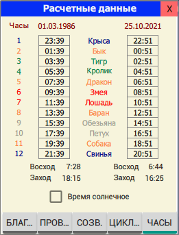
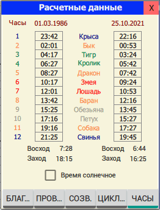

На вкладке ЦИКЛ... отображаются большие циклы и китайские даты для даты рождения и расчетной даты.

На вкладке ЧАСЫ отображаются начала китайских двухчасовок для даты рождения и расчетной даты, а также восходы и заходы солнца для этих дат. Если место рождения человека не указано, то информация по дате рождения не рассчитывается и ячейки в первом столбце будут пустыми.

Начало и длительность китайских "двухчасовок" будет другой, если включить использование переменных часов, которые зависят от географической широты места рождения и расчета (см. Настройки приложения).